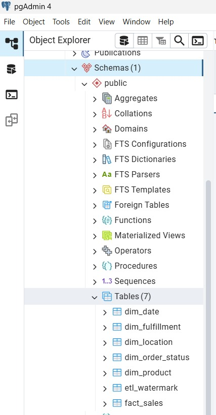
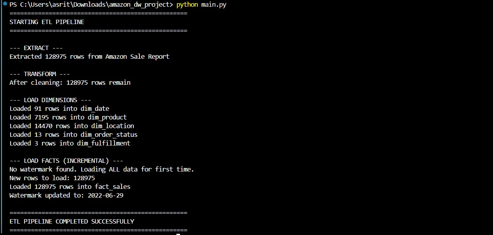
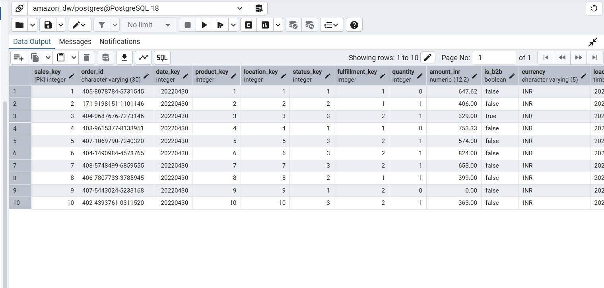
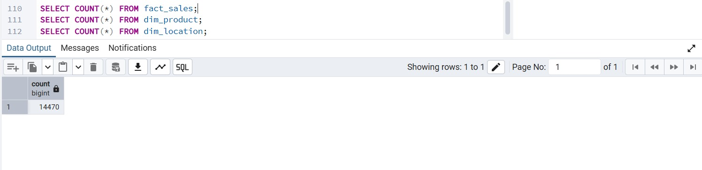
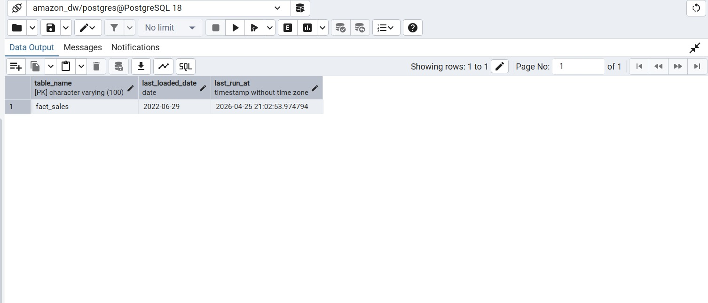
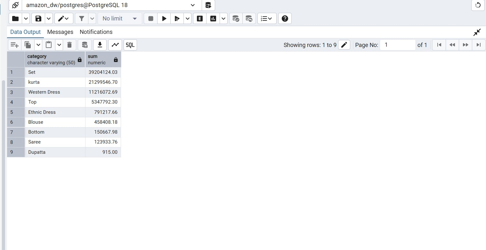

Project Overview
This project demonstrates how raw e-commerce transactional data can be transformed into a structured analytical warehouse. The source dataset was extracted from CSV files, cleaned using Python, and loaded into PostgreSQL using star schema modelling.
To improve efficiency, a watermark-based incremental loading process was implemented so future runs load only newly arrived records.
Dataset Summary
- 128,975 total sales records
- Order date, amount, category, quantity
- State and location information
- Order status and fulfilment mode
- Currency and B2B/B2C indicators
Warehouse Schema Design
The warehouse uses dimensional modelling with one central fact table and supporting dimensions.
- fact_sales
- dim_date
- dim_product
- dim_location
- dim_order_status
- dim_fulfillment
- etl_watermark

ETL Pipeline Execution
The ETL pipeline extracts data, cleans records, loads dimensions, inserts facts, and updates the watermark table.
python main.py

The initial execution loaded all dimension tables and inserted 128,975 rows into the fact table successfully.
Fact Table Loaded Data
Below is a sample preview of the populated fact_sales table with surrogate keys and measures.

Validation Checks
Counts were verified after loading to ensure successful warehouse population.

Incremental Loading using Watermark
A watermark table stores the latest loaded business date. During subsequent executions, only records after the saved date are inserted.

Next Runs → Only New Rows
Reduced Processing Time
Business Insights
SQL queries were executed on the warehouse to identify revenue-driving categories.

- Set category generated highest sales revenue
- Kurta ranked second
- Western Dress performed strongly
- Traditional categories had lower demand
Technologies Used
- Python
- Pandas
- PostgreSQL
- pgAdmin
- SQLAlchemy
- GitHub Pages
Learning Outcomes
- Practical ETL pipeline development
- Star schema implementation
- Fact and dimension loading
- Incremental processing strategy
- Analytical SQL reporting
Conclusion
This project provided practical understanding of real-world data engineering concepts such as ETL automation, dimensional modelling, warehouse querying, and incremental data loading.
It demonstrates how raw operational data can be converted into reliable analytical systems for business decision-making.